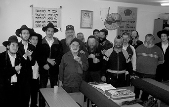

קרני השמש זרחו מבעד לסורגים
כל בוקר עושה הרב מיכאל מלכא את דרכו אל בית הסורגים של אחד מבתי הכלא שבדרום הארץ. הרב מלכא הוא רב מחוז דרום בשב”ס, והוא אחראי על שירותי הדת באחד עשר בתי הכלא. הוא לא מטפל רק בצרכי הדת, אלא דואג להביא יהדות, להרביץ תורה ולגעת בנשמותיהם של אותם יהודים שנכנסו אל בית הסורגים וחייהם נעצרו. שם, בשיא הגלות
כל בוקר עושה הרב מיכאל מלכא את דרכו אל בית הסורגים של אחד מבתי הכלא שבדרום הארץ. הרב מלכא הוא רב מחוז דרום בשב”ס, והוא אחראי על שירותי הדת באחד עשר בתי הכלא. הוא לא מטפל רק בצרכי הדת, אלא דואג להביא יהדות, להרביץ תורה ולגעת בנשמותיהם של אותם יהודים שנכנסו אל בית הסורגים וחייהם נעצרו. שם, בשיא הגלות האישית, הוא פותח להם צוהר אל הגאולה האישית שלהם • בין הסורגים
הראיון עם ‘רב כלאי’ הרב מיכאל מלכא, רב מחוז דרום בשירות בתי הסוהר, נערך בצורה מקוטעת. מדי כמה דקות צלצל הטלפון במשרדו וכרב בתפקיד הוא נאלץ היה להשיב. בקשות מיוחדות זורמות אליו מכל מתקני הכליאה באזור הדרום; בטלפון אחד משוחח אסיר שמדווח על מחסור במזון מהדרין, בטלפון השני נמצא רב של אחד ממתקני הכליאה שמבקש להתייעץ. בין לבין מתקשרים סוהרים ומפקדי בתי כלא כדי לשאול שאלות או יעוץ והדרכה. לרב מלכא יש רק מילים טובות לומר על הממונה עליו הרב הראשי הרב יהודה יקותיאל וייזנר. “הוא הקפיץ את כל נושא הרבנות בשב”ס לממדים חדשים”.
בבדיקה שערך הרב מלכא, הוא מספר שמרבית הרבנים בבתי כלא נמנים על קהל עדת חסידי חב”ד. “מתורת החסידות קיבלנו את החינוך לאהבת כל יהודי, ולא משנה מהי המעטפת החיצונית שבה הוא עטוף, כמו גם היכולת להביט על עצמותו שהיא חלק אלוקה מעל ממש, בנים אתם להקב”ה. לא ייפלא אפוא שתחושת שליחות חזקה מפעפעת בנו ומאפשרת לרבנים החב”דיים בשירות בתי הסוהר, להתחבר בקלות לעבודה עם האסירים ואפילו לאהוב אותה”, מסביר הרב מלכא, ומוסיף: “בסופו של יום, זהו, תבלין בו מתובלנת כל הפעילות”.
הרב מלכא מכהן זה עשור ומחצה בתפקידי רבנות בשב”ס. הוא החל כרב בית הכלא ‘אהלי קדר’, ובשש השנים האחרונות נמצא בתפקיד האחראי – רב בתי הכלא במחוז דרום. מי שמכיר את עבודתו הנמרצת יודע שאת ה’מקל’ מול האסירים, הוא מותיר בידי הסוהרים בעוד שהוא עצמו פועל בשיטת ‘הגזר’ – עידוד ואהבה אינסופית ברוח התורה והחסידות, שיעורי תורה רבים, לעיתים אחד על אחד; מדרשיות נפתחו בין כותלי בתי הכלא בהם לא מצויים אגפים תורניים. “התפקיד מאתגר והעשייה יום יומית. כל העת עולות אצלנו תוכניות חדשות ואף מיושמות בשטח”.
השבת בקראון הייטס ששינתה את החיים
הרב מלכא נולד במרוקו בשנת תשי”ז. כשהיה בן שנתיים היגרו הוריו לצרפת, שם התגוררו בעיר ‘סרסל’ כעשר שנים עד שהגיע לגיל בר מצווה, או אז החליטה המשפחה לעשות עלייה ארצה. “עלינו שנה אחרי מלחמת ‘ששת הימים’. הניצחון היה מזהיר והאופוריה הייתה בשיאה. אני זוכר את אמי יוצאת במהלך המלחמה לעשות חוגי בית בכדי לאסוף כסף אותו שלחה לצה”ל. זה היה גל העלייה הראשון מצרפת ובתוכם אנחנו שהתיישבנו בעיר חולון. ביתנו בצרפת היה מסורתי ומטה, אך קיבל תפנית לאחר שעלינו לארץ ישראל, כאן ההורים התחזקו ביהדותם והפכו לשומרי מצוות.
“הייתה אמונה חזקה מאוד בבית אבל אותי משום מה היא לא סחפה. בשירותי בצבא ביחידת נ”מ של חיל האוויר, הסרתי מעצמי את פירורי המסורת האחרונים שדבקו בי כתלמיד בבית הספר ‘אוצר התורה’ בסרסל. במהלך השירות הצבאי נשלחנו על ידי הצבא ללמוד מערכות מסוימות באל פסו שבטקסס. התלהבנו מאוד מהטיול ב’תפוח הגדול’ ניו יורק, כולנו ידענו שיום יבוא ונחזור לארץ האפשרויות הבלתי מוגבלות. ואכן, יום לאחר השחרור כבר היינו על מטוס בדרך למטרופולין הגדול, שם עבדתי בחברה לעיצוב פנים.
“לניו-יורק הגעתי בשנת תשל”ט. ביקשתי להתרחק מכל דבר שהזכיר לי מסורת יהודית, אך זה לא עזר. יום אחד התדפק בדלת משרדי במנהטן הרב שרגא זלמנוב שהיה ראש הוועדה לדוברי עברית שפעלה בקרב ישראלים בניו יורק, ואמר: אנחנו מארגנים שבת במחיצת הרבי מליובאוויטש בשכונת קראון הייטס, אני מזמין אותך אישית להגיע ולהשתתף. נעניתי להצעה בחפץ לב.
“האמת היא שכל הזמן שמעתי סביבי על גדולתו של הרבי. אנשים היו אומרים ‘אם הגעת לניו-יורק ולא היית אצל הרבי, כאילו לא היית בניו-יורק’. זה היה בשנת תשד”מ. אותה שבת הקסימה והדהימה אותי. הרבי עורר אצלי מרבצים של אמונה שהיו חבויים בתוכי. ראיתי מולי מנהיג מלך ממש. במהלך השבת שמעתי דברים על מהות החיים, ואפילו הכנסת האורחים הותירה בי רושם עמוק. זה סחף אותי. לאחר השבת הזו הגיעו עוד שבתות רבות נוספות בהן הייתי שוהה עם חב”דניקים ודן עמם על מהות החיים. פתאום הבנתי שהיהדות היא לא מערכת חוקים נטולת היגיון, אלא יש בה עומק מזהיר, פנימיות מדהימה, ואורח חיים מובנה על ערכים אמתיים.
“לאט לאט התחלתי למאוס בחיי החומר של מנהטן והתחברתי לעולם הרוח שנגלה בפניי. עזבתי את העבודה ונכנסתי ללמוד בישיבה לבעלי תשובה במוריסטאון. מהר מאוד הגיעו המגבעת והחליפה. למדתי חסידות שעות על גבי שעות כמו גם שיחות של הרבי. אהבתי את העומק והגישה. לאחר נישואיי, עברנו להתגורר בשכונת קראון הייטס”.
קפיצה למימי השליחות
בכל השנים הללו עד לעלייה המחודשת ארצה בשליחות ביישוב מצפה רמון, חווה הרב מלכא כמה וכמה קירובים שהוא מגדירם שמימיים ממש. “במשך זמן ארוך חשתי צביטה בלב על כך שהרבה חסידים ומקורבים ‘טריים’ זוכים לתשומת לב מיוחדת, דבר שאני לא זכיתי לו. חסידים הסבירו לי שמי שמקבל קרובים מהרבי זה אומר שהוא עדיין לא קרוב, ואילו אני כבר קרוב. זה הרגיע את המוח אבל לא את הלב. פעם במוצאי שביעי של פסח בעת חלוקת כוס של ברכה, שטחתי בפני חבריי את תחושתי. אחד מהם אמר לי: רוצה חיוך מהרבי? תבוא אתה עם חיוך לרבי.
“כך עשיתי. כמובן שהחיוך לא היה חיצוני אלא פנימי. כשנעמדתי מול הרבי זכיתי לחיוך רחב ולא שגרתי, כאילו הרבי ידע על השיחה שהייתה לי עם החבר.
“בפסח שנת תשמ”ז קרה לי משהו מדהים עוד יותר, מפליא ממש. לאותו חג הגיעה קבוצה של מבקרים מצרפת, ואני סייעתי בידי אחד מהם לעקוב אחרי התפילה. לפני ‘ברכת כהנים’ הרבי פינה את הבמה לכהנים ולו סידרו סטנדר למטה. הסברתי לצרפתי מה זה כהנים ומה הם עושים, ואז הוא שאל אותי בתמיהה: ‘הרבי לא כהן?’ עניתי לו שלא. ואז קורה דבר מדהים: הרבי הסתובב אלינו והביט בפנים תמהות. נבהלתי מאוד. בהמולה שכזו ובמרחק כזה בוודאי שהרבי לא יכול היה לשמוע את הדו-שיח בינינו, אבל בגלל המבט של הרבי אמרתי לבחור שהרבי אמנם לא כהן אבל הוא ראש בני ישראל.
“שבת לאחר מכן, תזריע מצורע, אמר הרבי שיחה שלמה שכמעט הפילה אותי מהרגליים. הרבי דיבר על השייכות של משה רבינו לכהונה והביא את חילוקי הדעות בעניין.
“בסיומה של השיחה הארוכה הסביר הרבי שדרגתו של משה רבינו גבוהה מכהן… הרגשתי שהדברים ממש מכוונים אלי. רעדתי מהתרגשות. הרגשתי שרוח הקודש ממש מדברת מתוך גרונו של הרבי. זה מאוד קישר אותי לרבי.
“לפני חג שבועות טסתי למיאמי כדי לסייע בידי השליח ציון כהן. הכרטיסים היו מוזלים, ומכיוון שהכרתי את השליח, ביקשתי לסייע בידיו. כוונתי הייתה לחזור ל-770 לפני חג השבועות. אלא שבינתיים עלות הכרטיסים הרקיעה שחקים, והשליח ביקש ממני להישאר בבית חב”ד בחג השבועות מפני שהוא מוכרח לטוס עם אחד הגבירים שלו ל-770. הסכמתי לא בלי חששות גדולים, איך אערוך שולחן עם עשרות ישראלים, בניהם קיבוצניקים רבים. השליח נתן לי הדרכה ובפועל הייתה הצלחה למעלה מהמשוער. בליל חג השבועות חלמתי שאני ב’בית חיינו’ ואני מרים כוסית יין לומר ‘לחיים’ והרבי מביט בי בפנים מאירות. הרגשתי שהסבתי לרבי נחת.
“בעקבות זאת התעורר בי חשק עז לצאת לשליחות. באותה שנה הרבי הִרבה לדבר על שליחות. התוועדות אחת של הרב זימרוני ציק שהתקיימה בביתי, הספיקה לי כדי להוריד את המחשבות לעולם המעשה. הרב נחום כהן מצא”ח הציע את מצפה רמון. לאחר שקיבלתי את ברכת הרבי: ‘הסכמה וברכה’, ארזנו את מטלטלנו ויצאנו לשליחות.
“מי שעודד אותי מאוד בשליחות בעיר הנידחת הזו, היה הרב משה סלונים ע”ה, דמות של חסיד אמיתי בעל מסירות נפש. בשליחות במצפה רמון היינו כמה שנים טובות. מדי יום הייתי יוצא למבצע תפילין. ארגנו תהלוכות ל”ג בעומר, התוועדויות, כינוסים ושיעורי תורה, ואף פתחנו גן ילדים “חיה מושקא”. היינו שולחים לרבי דו”חות וזוכים כמעט תמיד לתשובות. פעמים רבות שראינו השגחה פרטית גלויה. היה פעם שנתקעתי בלי כסף לקראת תהלוכות ל”ג בעומר, ובדיוק נחת אצלנו ידיד שהגיע מ-770 ובאמתחתו סכום שכיסה הכול“…
זה היה בשנת תשמ”ד. אותה שבת הקסימה והדהימה אותי. הרבי עורר אצלי מרבצים של אמונה שהיו חבויים בתוכי. ראיתי מולי מנהיג מלך ממש. במהלך השבת שמעתי דברים על מהות החיים, ואפילו הכנסת אורחים הותירה בי רושם עמוק. זה סחף אותי.
יהדות בין הסורגים
את תפקיד הרב בבתי הכלא, החל הרב מיכאל מלכא לפני קצת יותר משש-עשרה שנה, בעוד שאת הפעילות בין חומות הכלא החל כמה שנים קודם לכן. כשליח נמרץ במצפה רמון, הרבה לפקוד את בית הכלא הסמוך ‘נפחא”. הרב יוסף אוחיון, שהיה אז ה’רב הגושי’ – כך כונה בעבר רב מחוז – נהנה מאוד מפעילותו רבת המרץ של הרב מלכא. היה זה אך טבעי שהרב אוחיון פנה לרב מלכא והציע לו לכהן כ’רב יחידה’ בבית-הסוהר ‘אהלי קידר’ בו התנדב. או אז הרב מלכא הצטרף לשירות באופן רשמי והחל להשקיע שם את מרצו ונשמתו. במשך השנים קודם לתפקיד ממלא-מקום הרב הגושי בדרום.
“מאוד נקשרתי לבית-הסוהר”, מספר לנו השבוע הרב מלכא במהלך הפסקה קצרה בין הגיחות שהוא מבצע בשבועות האחרונים באחד עשר בתי-הסוהר הנמצאים תחת אחריותו במחוז הדרומי. “לא הגעתי לשב”ס רק כג’וב. יש הבדל אם אתה מסתכל על משרת הרב בשב”ס כעל עוד עבודה או כעל שליחות. גם היום, כשאני הולך הביתה, אני חושב על האסירים; איך אפשר לעודד אסיר מסוים או לשקם רוחנית אסיר אחר. למיטב ידיעתי, כך נוהגים גם יתר עמיתיי חסידי חב”ד המכהנים בשב”ס. היות ואנחנו שלוחים של הרבי, אנחנו משקיעים את עצמנו בעבודה בלי הפסקה ורואים בכך שליחות של ממש. אין לי ספק שגם רבנים מהזרמים האחרים ביהדות החרדית המכהנים בשב”ס, משקיעים את מלוא כוחותיהם. אבל אצלנו כחסידים של הרבי, זה נושא שנוגע לנו בעצם נפש ואנו פועלים להכין גם את המקומות הללו לקראת הגאולה. בית-הסוהר שלי הוא, בשבילי, כמו שכונה או עיר בה אני מפעיל בית חב”ד ומתמסר להצלחת העניין עשרים וארבע שעות ביממה”.
מאז שנכנס הרב מלכא לתפקידו במחוז דרום, הדברים זזים בקצב מסחרר. התוצאות מוכיחות את עצמן: כשמונה למשרתו, הייתה המדרשה ב’אהלי קידר’ היחידה שפעלה במחוז הדרום, ובה רק שבעה תלמידים. היום פועלים במחוז הדרום אחת עשרה מדרשות בהן לומדים מדי יום ביומו כמאתיים אסירים.
אתה זוכר את התקופה הראשונה שלך בשירות האסירים?
“בוודאי שאני זוכר את הימים הראשונים”, נזכר הרב מלכא בערגה. “היו מעט אסירים באגף שומרי המצוות. אפילו מניין לא היה. מדי בוקר עברתי בין התאים באגף עם מפוחית-פה וניגנתי לאסירים עד שהיו מתעוררים ובאים לבית-הכנסת. זה לא היה קל. לעיתים קרובות הייתי צריך לקבץ גם סוהרים שיבואו להשלים מנין. היום יש באגף התורני שב’דקל’ למעלה משבעים אסירים, רובם חזרו בתשובה בבית הסוהר עצמו. הללו משתתפים בקביעות בתפילות ובשיעורים. זהו הישג אדיר!”, מסכם הרב מלכא.
איך פועלים זאת?
“בהדרגה העלינו את מספר המשתתפים בפעילות שבבית הכנסת. תחילה ‘השתלטנו’ על שני חדרים, אחר כך על חצי קומה, ועכשיו יש לנו אגף שלם שמאוכלס באנשים המחפשים להרוות את צימאונם הרוחני ורק בהיותם ‘בפנים’ מצאו לכך זמן ופניוּת בנפש. הביקוש להשתתפות באגף הדתי הולך וגדל ולפעמים יש אפילו בעיה של חוסר-מקום”. בבתי-הכלא יש רמות דירוג שונות של אגפים המיועדים לשומרי מצוות. הדרגה הנמוכה ביותר היא אגף המפעיל בתחומו מדרשה ללימודי יהדות, רוב הדיירים באגף כזה אינם שומרי מסורת.
לא יכולתי להתאפק ושאלתי את הרב מלכא את השאלה המסקרנת: האם באמת האסירים מתחזקים בעת המאסר או שמא מדובר באחיזת עיניים בלבד?
“רוב רובם של האנשים ששמים כיפה או מתחילים לשמור שבת הם רציניים ולא אינטרסנטים. אין לי ספק בכך. שמתי לב לעובדה הזאת במשך כל שנות שירותי. אני חושב שיש לכך שתי סיבות. אחת: כשנכנסים פנימה החיים נעצרים. בלי משפחה. בלי חברים. בלי טיולים. מי שיש לו מספיק שכל, מנצל את פסק-הזמן הזה להאכיל את נשמתו במזון ובא לשיעורים ולתפילות. הסיבה השנייה היא, שלאנשים יש פתאום זמן לחשוב הרבה ולנסות להבין איפה הם טעו. כאן הם מנסים לתקן את עצמם, חלקם המכריע באמצעות המדרשה”.
לרב מלכא יש כלל חשוב אותו הוא מעביר למצטרפים החדשים: “כשמגיע מישהו חדש, אני נוהג לשאול אותו: לכמה זמן נשפטת. מי שאומר שנשפט לשנתיים, למשל, אני אומר: יש לך שנתיים להתכונן לשחרור. יש לך שנתיים לקחת את עצמך לידיים ולהתכונן לחיים בחוץ. כעת אתה מתכונן למבחן שייערך כשתצא, בבית ברחוב או בכל מקום בו עברת על החוק. כאן ועכשיו הזמן לשפר”.
התעניינתי אצל הרב מלכא האם באגפים בהם משוכנים הדתיים ומי שבדרך, המשמעת טובה יותר והוא השיב ללא היסוס: “כל מנהל כלא יודע שאגף כזה הוא פינה שקטה. ברמה ההתנהגותית זה אגף עם הכי פחות בעיות, סכסוכים או חיכוכים מכל אגף אחר”.
לחלק מבתי הסוהר מגיעים מדי יום שישי תמימים מישיבות סמוכות כדי לפעול בקרב האסירים ולהניח עמם תפילין. לא אחת הם מוצאים שם ‘קרקפתא דלא מנח תפילין’ ומזכים אותו בהנחת תפילין בפעם הראשונה בחייו. האסירים ממתינים בקוצר-רוח לבואם של התמימים, והם כאוויר לנשימה בעבור אסירים רבים שלא משתתפים בפעילות השוטפת של המדרשה. “מדובר בנוהל חדש שלא היה בעבר, המאשר הכנסת אזרחים לתוך בתי הכלא, וזה לא דבר פשוט. בנושא של ‘מבצע תפילין’ יש גיבוי מהשב”ס ואנו בהחלט סומכים על הבחורים”. מיותר לציין כי מי שמבקש להתנדב בבתי כלא, עובר תדריך מקצין המודיעין של הכלא.

נשמות מאירות במחשכי הכלא
גולת הכותרת של פעילותו, בנוסף לדברים השוטפים, זה המדרשיות. “התוצאות מעוררות התפעלות בכל פעם מחדש”, הוא מגלה. מעטים מהמשתתפים בפעילות המדרשות לא עומדים בניסיונות לאחר שהם משתחררים, והם מורידים מעליהם את הכיפה או הזקן ומשליכים מאחוריהם את שמירת השבת. בדרך כלל, מי שמצליח לשרוד חצי שנה במדרשה, לא נופל. באמתחתו של הרב מלכא דוגמאות רבות. אלפי אנשים עברו בשיעוריו התורניים, שיעורים בהלכה ובגמרא וכן תניא, מאמרים, ובעיקר שיחות של הרבי.
“לפעמים אנחנו עושים פעילות שהיא מצילת חיים ואנו עצמנו כלל לא יודעים עליה. הנה דוגמה: יום אחד אני מקבל טלפון מרב בית הכלא ‘כרמל’. הוא מספר לי על אסיר חדש שהגיע אליו ובשמחת תורה רקד בלהט. כששאל אותו לפשר שמחתו, ענה לו: מפני שבמקום למות הוא גילה את האמת. מסתבר שהבחור הזה שכב במסדרון אצלנו מיואש וממורמר ותכנן כבר רח”ל את התאבדותו. בדיוק אז פגשתי בו ועודדתי את רוחו, מה שגרם לו להתחרט ולגנוז את תוכניתו. כעת יש לו תאריך לחתונה, כמה חודשים לאחר שיצא מהכלא…”
בפיו של הרב מלכא סיפורים שאותם הוא מספר בשתי מילים, אך מאחוריהן מכווצים חודשים ואף שנים של עבודה וחשיבה יום-יומית מפרכת. הדוגמאות ממחישות את השינוי העצום שחל באסירים רבים. “היה בחור שישב באגף סגור בו יושבים האסירים המסוכסכים שעלולים לפגוע או להיפגע בידי אחרים. הוא ישב בעוון החזקת סמים. הגעתי לאגף שלו למסור שיעורי תורה וקירבתי אותו באופן מיוחד. עודדתי אותו, הקשבתי לו במשך זמן רב, וניסיתי לשכנע אותו לעבור לאגף הדתי אך הוא סירב.
“לבסוף נעתר והצטרף אלינו ברגשות מעורבים. השקעתי בו המון זמן וכוחות נפש. הוא עלה על הגל, נפשו חשקה בתורה והוא החזיר גם את חברתו בתשובה. כיום הוא אברך חרדי לכל דבר, עם חליפה ארוכה ומגבעת ואב למשפחה מפוארת. אמנם הוא אינו חסיד חב”ד, אבל יהודי טוב, וזה העיקר”. לדברי הרב מלכא יש עשרות יהודים חרדים שהתקרבו לקונם בהיותם בבתי הכלא, חזרו בתשובה והקימו משפחות דתיות ואפילו חסידיות. “זה חבר’ה שעברו מה שעברו, הבינו את המסר וחזרו בתשובה שלמה. אני אישית שלחתי כמה לישיבות חב”ד ברמת אביב, בצפת ובקטמון”.
“הייתי פעם בניחום אבלים”, נזכר הרב בסיפור נוסף, “ומישהו פתאום צעק לי: “הרב מלכא, אתה זוכר אותי”? ניסיתי להיזכר אך לא הצלחתי, אבל אז הוא הפתיע אותי והזכיר לי שכשהיה ב’אהלי קידר’ לקחתי אותו מהאגף שלו והכנסתי אותו לאגף הדתי. כשהשתחרר, עזב את עולם הפשע בו היה שקוע עד הצוואר, השתקם וכיום הוא שומר שבת וכשרות למהדרין”.
את הסיפור הבא שנשמע הזוי מעט, הוא מתקשה לשכוח והוא מספר אותו בהתלהבות:
“היה בחור נוסף שקרבתי – אני ממש זוכר זאת כאילו קרה היום – הוא התחבר במהירות לתורה ולקיום המצוות. שלחתי אותו לשיקום בישיבה וגם שם הוא המשיך והתעלה. בשלב מסוים התמנה כאחראי בישיבה בה למד. הוא היה כל כך רציני בדרך בה בחר, עדי שראש הישיבה לקח אותו כחתן לבתו!”…
הבעיה, מבחינת הרב מיכאל מלכא, שלפי חוקי השב”ס אסור ללובש מדים להמשיך קשר עם אסיר אחרי שחרורו. “פעם היה פה אסיר שישב חמש שנים רצופות והיה לי קושי עצום לעזוב אותו. בהשגחה-פרטית יצא לי מדי פעם לראות אותו באקראי, ובכל פעם הוא צעק לעברי: ‘אנא נסיב מלכא’ – בהתכוונו למאמר ש’תפס’ אותו וגרם לו להשתנות”.
מה שכלאי חב”די רואה…
הרב מלכא מסביר לנו שהפעילות בין כותלי בית הכלא היא כפעילות של בית חב”ד לכל דבר ועניין. כמו שבית חב”ד אמור להיות כתובת לכל עניין יהודי, כך הוא רואה את תפקידו וייעודו לסייע לכל אסיר שמבקש יהדות. “מדי שבוע אני מכין שיחות או מאמרים של הרבי שנוגעים לנושא של שיקום, כאשר מכל שיחה ניתן להפיק את המעשה בפועל, שאל ליהודי להתייאש; שיהודי צריך להגביה את עצמו. לא חסרים בחסידות מסרים של עידוד ושיקום, ואנשים שותים בצמא את הדברים. לא ניתנו המצוות אלא כדי לצרף בהן את הבריות, ואת זה רואים היטב דרך משקפיי החסידות”.
בכל זאת, מה הנקודה בה מיוחד רב חב”די על פני אחרים?
“אנחנו התחנכנו להביט גבוה. המסר שלנו זה גאולה. אנחנו חונכנו שבגלות אנחנו נמצאים במאסר של הגוף, וכשתבוא הגאולה נצא מהמאסר הזה. רב חב”די רואה לא רק את הנמשל אלא גם את המשל. כל אחד מאתנו יודע שעד שהגאולה תבוא, אנחנו אסירים בידה של הנפש הבהמית. לכן קל לי יותר להזדהות איתם, כל אחד ומעשיו ורמתו. אנחנו מדברים איתם על גאולה כללית ועל גאולה פרטית. ברמה הפרקטית יותר, אנחנו פועלים כמו שהרבי לימד אותנו לדבר עם יהודי בגובה העיניים, לאהוב אותו ולא להתנשא.
“אני לא מוותר על אף יהודי, גם אם הוא נראה לי לא קשור למסרים של יהדות. לא פעם יצא לי לראות אסיר מלא בקעקועים ועגילים עם חזות קשוחה אך לאחר שיחה בינינו גיליתי נפש עדינה של יהודי חם שרוצה להתקרב לבורא עולם. אנחנו מביטים על העומק והמהות של היהודי ולא על החיצוניות שלו. החיצוניות לא מבהילה אותנו. להפך, דווקא האנשים הללו קרובים יותר לגלות את האור כי אין להם עוד לאן לרדת. הם נמצאים במקום הירוד מכיוון שנפשם חפצה ומשתוקקת לחזור למקורה ושורשה, וזאת העבודה שלנו לסייע בידה”.
אתה מדבר באותיות של גאולה; כלא זה המקום הכי נמוך, שם אפשר לראות גאולה?
“אדם מן השורה מביט על זה כמקום נמוך, אבל הרבי לימד אותנו להביט על המקום נמוך בראיה אחרת, שאור הגאולה מפציע דווקא מהמקום הנמוך ביותר. אני רואה זאת במוחש בכל יום. דווקא בבתי הכלא אנשים יותר נפתחים לשינוי, לגאולה הפרטית שלהם וממילא לגאולה הכללית. ברגע שאדם שם רגל בבית הכלא, האסימון נופל לו. הוא עומד מול עצמו ומתחיל לחשוב. וכשמגיע רב באותה שעה ומשדר להם אמונה ותקווה, הרי התקווה שלנו בסופו של דבר היא גאולה.
“בפועל, אין שיעור או הרצאה שאני לא מדבר בה על בשורת הגאולה. השדר הוא שהמצב שלנו לא נורמלי בלי משיח וכי העולם מוכן כבר לגאולה. ישנם שיעורים מיוחדים רק על עניני גאולה ומשיח. ישנם גם כמה שיעורים ב’דבר מלכות’. ישנו ביטוי של הרבי שאומר שלא מופרך שהגאולה תגיע ברגע זה ממש, וזה מה שאנו משדרים; לא מסתפקים בהישרדות, אלא רוצים חיים מלאים ואמתיים”.
בקונסטלציה של בית כלא ניתן לכתוב עם אסירים לרבי?
“דווקא לאחרונה כתבתי עם הרבה אסירים לרבי מה”מ.
“אני זוכר סיפור מי”ט כסלו השנה. כנהוג קיימנו התוועדות מיוחדת שבסופה הייתה התעוררות גדולה וכולם ניגשו לכתוב. אחד המשתתפים ביקש לקבל ברכה שוועדת השליש שתדון בעניינו, תחליט על שחרורו. למען האמת, זו הייתה בקשה לא סבירה נוכח הרשעותיו אבל אמרתי לו שיכתוב והרבי הוא נשיא של כלל ישראל וניתן לכתוב לו הכול. הוא זכה לקבל מכתב מדהים שעסק בגאולת י”ט בכסלו. לא יכולנו שלא להתפעל מההקשר… המדהים עוד יותר הוא, שוועדת שליש אכן החליטה לקצץ לו מזמן מאסרו.
“לאחרונה היה עציר שלקה בפריחה מוזרה בידיו. הוא לא יכול היה לעשות שום דבר עם ידיו ורק בקושי הצליח להניע אותם בלי שהדבר יסב לו כאב. כל הטיפולים שניסו בעניינו, כשלו. הוא סבל מאוד. כתבנו לרבי והמענה היה על המעשים הטובים שיהודי צריך לעשות בכל איבריו ברגליו ובידיו. זו הייתה התייחסות ממש ברורה. הצעתי לו, והוא ניאות לקחת על עצמו לומר חת”ת מדי יום ביומו. כמה ימים לאחר מכן יצאתי לחופשה, וכשחזרתי הוא רואה אותי ומסמן לי וי באצבעותיו. הוא סיפר שעשה את הוראת הרבי ופחות משבועיים ימים חלפו, וכל הפריחה נמוגה ונעלמה כלא הייתה“…
לרומם את רוח היהדות בבתי הכלא
בחותם דבריו, מביע הרב מיכאל מלכא תקווה שהכתבה תתפרסם כבר בעידן של גאולה, אבל עד אז הוא יעשה הכול יחד עם חבריו הרבנים בכדי לרומם את רוח היהדות בתוך בתי הכלא. “הצל”ש האמתי – ומוכרחים לומר זאת כי אין מובן מאליו – מגיע לשלושה האנשים היקרים העושים מלאכת קודש בשיקום האסירים ומובילים בהצלחה מופלגה את מערך הרבנות של שב”ס: הרב הראשי לשב”ס הרב יקותיאל יהודה ויזנר, סגנו הרב שלומי כהן-אלורו ועוזר הרב הראשי הרב אלמליח עופר. בזכותם, כל המערכת בשב”ס, החל מהנציב, דרך מפקדי מחוזות ועד אחרון הסוהרים הניצבים בעמדת הזקיף, מבינים יותר, קשובים ומסייעים רבות לפעילות הברוכה”.
קרני השמש זרחו מבעד לסורגים
מספר הרב מיכאל מלכא:
“בטרם התמניתי לרב המחוז, הייתי ממונה על שירותי הדת ורב בית הכלא ‘אהלי קידר’. בהשגחה פרטית קיבלנו תרומה של ספר תורה חדש לשימוש המתפללים בבית הכנסת, והחלטתי להכניסו לאגף 4 שעד אז סבל ממחסור בספר תורה לתפילות. החלטתי לנצל את ההזדמנות לחגיגה גדולה בהשתתפות האסירים, חגיגה שכמובן תעודדם ותחזקם לצד שמיעת דברי התעוררות. פניתי למפקד המחוז, שטחתי בפניו את הרעיון, הוא הביע את הסכמתו ואישר הזמנת צוות תזמורת ואישים שילוו את האירוע. ‘רק תעשה לי טובה’, ביקש, ‘אני מבקש שתדחה את האירוע בחודש ימים, פשוט עומדים להחליף כאן את הפיקוד, והייתי רוצה שמפקדת הכלא החדשה, תהיה נוכחת באירוע’. מובן שהאירוע נדחה לאלתר בחודש.
“כשחלף המועד, התחלתי לתכנן שוב את קיומו של האירוע, אלא שאז יצא המפקד לחופשה, ואני שרציתי לראות אותו אתנו באירוע, החלטתי להמתין עד לשובו מהחופשה. כך הלך הדבר ונדחה מפעם לפעם כשבכל פעם צצה סיבה נוספת לדחייה.
“כשראיתי שכך הם פני הדברים, החלטתי לקבוע זמן לאירוע, ויהי מה. ביום ראשון הקרוב, באסיפת ההערכות, העליתי את הרעיון, והודעתי שברצוני לקיים את האירוע עוד באותו שבוע. קצין המשק הביט בי כלא מאמין: “דווקא השבוע? אתה יודע איזה מזג אויר הולך להיות?!” אך כיוון שכבר החלטתי על תאריך, לא היה בכוונתי לשנותו. הצעתי לו להיערך בשני אופנים. הראשון עם במה בחוץ תחת כיפת השמים והשנייה בתוך אולם בפנים – כך שבכל מקרה האירוע יוכל להתקיים.
“ואכן אותו שבוע היה סוער במיוחד. לילה לפני האירוע התחוללה בבאר שבע סופה של ממש. עשרות תריסים בבתי השכונה המזרחית בעיר, נשברו כתוצאה מהברד הכבד. בבוקר האירוע נכנסתי לתפילה בבית הכנסת החב”די בעיר “בית מנחם”. לפני צאתי מהמקום ביקשתי את ברכת הרבי מלך המשיח לאירוע. מאחר ולא היה לי זמן לכתוב, רק פתחתי את אחד מכרכי האגרות קודש” והצצתי לראות את הכתוב. עיני אורו: “‘כפי הפתגם הידוע ‘קרא לשמש ויזרח אור’ אל תאמר לשֶׁמֶשׁ אלא לשַׁמָש’…
“בחוץ, מזג האוויר נראה רגע לפני סופת גשמים עזה. שמים אפורים קיבלו את פני, ולרגע כבר חשבתי לעצמי שאולי לא הבנתי בדיוק את התשובה. אם לא די בכך, הרי שפתאום צצו עיכובים שונים ומשונים. טלפון לאנשי התזמורת גילה כי הם מתעכבים בביתר עילית בגלל השלג שכיסה את העיר: ‘אנחנו צריכים לחכות לרכב מיוחד, עם שרשראות על הגלגלים כדי שנוכל לצאת מהעיר’, אמרו. בינתיים הדחיות הלכו ושיבשו את סדר יומם של האסירים, הממתינים לפי תכנון מדיוק מראש לשעה היעודה.
“גם רכבם של ה’תמימים’ תלמידי ישיבת חב”ד בבאר שבע שהיו אמורים לשמח, הגיע לשטח. לאחר דחיות כאלו ואחרות יצאה התהלוכה המרשימה לדרכה, כשכולם עומדים המומים מול מה שנראה כחזיון שמיימי שלא מהעולם הזה: מסביב למתקן הכליאה השמים היו אפורים, מבשרים על גשם קרוב, אך במרכז, בדיוק מעל בית הכלא, נראתה הרקיע ובעדה האירו קרני השמש “קרא לשמש ויזרח אור”. כך היה עד לסיום האירוע…”